The feel
Atompunk builds the future that postwar America expected as if it had really arrived: Tim Cain describes Fallout as "the future that the 1950s thought would happen".1 The look comes from Googie, a style "built on exaggeration; on dramatic angles; on plastic and steel and neon and wide-eyed technological optimism".2 It was never kept for the rich: the architect and historian Alan Hess points out that Googie went into coffee shops, gas stations, car washes and banks, the ordinary buildings of everyday life.2
The cheer always had the bomb behind it. Postwar Americans lived with a real fear of annihilation and an intense optimism about nuclear energy at the same time, and that duality fed a fascination with atomic imagery.3 People imagined the science of the Atomic Age would provide "limitless, clean, and cheap energy".4 Fallout turns the gap into dark comedy: its opening plays propaganda broadcasts "rendering the apocalypse in determinedly cheery tones" before the camera pulls back to a ruined city, and its art director, Leonard Boyarsky, says the team "constantly kept pushing the dark humor contrasted with violence".5
- cheerful
- chrome-trimmed
- push-button
- suburban
- optimistic
- quietly radioactive
Where it comes from
Atomic Age design ran from the late 1940s to about 1960, putting the atom on clocks, wallpaper and light fittings and feeding into Googie architecture.6 Googie was named after a West Hollywood coffee shop that John Lautner designed in 1949, and Hanna-Barbera's The Jetsons (1962) all but copied it.2 After Eisenhower's Atoms for Peace speech in 1953, Disney opened Tomorrowland in 1955 and Our Friend the Atom followed in 1957,7 and from January 1958 Arthur Radebaugh's Sunday strip Closer Than We Think showed newspaper readers the future week after week.8 Fallout (1997) made a game world of it when its art director, Leonard Boyarsky, based the look on "the world of the future as envisioned by the culture of the 1940's and 50's".5,9
Core elements
Googie architecture
Googie, born in Southern California, was flashy, futuristic and ultra-modern: dramatic angles, flying saucer shapes and homes like the Jetsons'.3 Hotels, diners and gas stations took atomic-era forms that looked as if they could double as spaceports.3
Atomic motifs
Designers turned the structure of the atom into ornament for the home, as in George Nelson's 1949 Ball Wall Clock.6 Las Vegas signs added starbursts, orbit rings, boomerangs and amoeba shapes, nods to atomic particles, exploding stars and rockets.3 Organic shapes, from amoebas to plant life, were the period's other hallmark.6
Jet-age cars
The Henry Ford calls tailfins the styling cue that defined 1950s American cars.10 They appeared on the 1948 Cadillac under Harley Earl, spread across GM, Ford and Chrysler within ten years, and peaked on the 1959 Cadillac, whose fins towered nearly four feet off the ground.10
Household future technology
The future turns up in daily life. Radebaugh drew mailmen on jet packs, classrooms with push-button desks and robots in warehouses,8 and Disneyland's plastic House of the Future (1957) showed off microwaves and push-button telephones.11 Fallout 3 adds robot butlers, nuclear-powered cars and tape-driven computers.12
Bulky analogue machines
Technology never got small. Fallout's Pip-Boy is a bulky, heavy lump with a monochrome cathode ray tube and a cast metal case, because miniaturisation took a different path in its world.13 Fallout 3's machines share the qualities of 1950s military and industrial design: vented metal boxes, rounded edges and large indicator lights.12
Upbeat ads and dark humour
Fallout sets upbeat, retro 1950s advertising and technology against a world in ruins.1 Tim Cain says the skill screen's text and artwork carried the game's dark humour, and its Vault Boy became the series' emblem.1
How to do it
Start from period sources
Fallout's look began with Leonard Boyarsky's interest in "retro 40's and 50's art with a twisted edge".9 Work from the same era rather than from Fallout: Radebaugh's Sunday strips,8 Erik Nitsche's 1955 posters for General Dynamics14 and the coffee shops and motels of Googie.2
Base machines on 1950s radios and TVs
For the Pip-Boy, Istvan Pely studied commercial and military design from the 1950s to the early 1960s, down to old portable television sets and army field radios.13 Give machines vented metal boxes, rounded edges and large indicator lights, and give even a device with smartphone powers a glass CRT and knobs, as Fallout 3 did with the Pip-Boy.12
Design roadside buildings and signs
Googie restaurants had to catch the eye of fast-moving motorists, so they stood out through size and "a certain degree of weirdness".2 McDonald's 1953 prototype shows the kit: bright, shiny, bold colours, big arches, a dynamic upswept roof and neon.2 Make the sign move, as the Stardust's did, with swirling electrons, bursting stars and lights pulsing like a chain reaction.3
Add a retro print finish
For flat art, start from a clean vector drawing, then give it the traits of a retro matchbook print: limited colours, halftone shading, misregistration and an old paper texture.15
Set up chrome and enamel
In a physically based material, metals take a metallic value of 1, and the measured base colour for chromium is 0.550, 0.556, 0.554.16 Paint is a nonmetal that sits on top of the metal, so drive the metallic value with a black and white mask: 0 where the enamel is, 1 where it has chipped away.16 For rust and dust, in-between metallic values and roughness maps add the wear.16
Add period advertising
Fallout 4's artists worked out what a living room looked like, which brands people bought and what life was like before the war, and let pre-war ads tell some of those stories.17 Set slogans in a casual script such as Oleo Script, which suits headlines, packaging, posters and advertising,18 and brand names in Atomic Age, inspired by the script nameplates of 1950s American cars.19
Set the tone and lighting
Fallout 3 "went hard on the gloomy despair of the post-apocalyptic world";20 for Fallout 4, lead artist Istvan Pely wanted "optimistic hope", more colour and "that retro pulp feel from Fallout 1 and 2".21 For dusty ruins, Fallout 3 used non-linear fog ramps, particle clouds and god rays faked with flat planes carrying additive gradients.12 Then play an old song over the end of the world, the feeling Boyarsky took from the end of Dr. Strangelove for Fallout's intro.5
Cheat sheet
Do
- Put the future in ordinary places. Googie went into coffee shops, gas stations, car washes and banks, not the houses of the rich.2
- Let the look run through everything. Boyarsky says that once Fallout's vision was agreed, "it needed to bleed through the entire feel of the world".9
- Give machines character through their flaws. Pely calls the Pip-Boy an ergonomic nightmare and says that is part of what gives it character.13
- Let survivors build in the ruins. Todd Howard says Fallout 4's people are building and growing, and a world that is not visually depressing all the time suits them.17
Avoid
- Draining all the colour. Pely says the Fallout 3 team "drained the colour out of the world",20 and Todd Howard looked back and said they were "really into brown".17
- Sleek modern gadgets. The Pip-Boy has no flat screen and its case is metal, not plastic,13 and the Dutch movement that took up the name in 2008 called atompunk "a strictly pre-digital period".22
- Copying Fallout. Even Fallout's creators, making The Outer Worlds, had to keep asking themselves whether it "felt too much like a follow-up".23
- Winking at the audience. Peter Tieryas finds Fallout more ominous for its "absurd optimism" in the face of cannibalism and extinction.1
Tools and tutorials
- Closer Than We Think: complete collection
Paleofuture's scans of Radebaugh's strip, year by year.
- Today's Inspiration
Leif Peng's long archive of mid-century commercial illustrators.
- Atomic Age
A free display face inspired by the script nameplates of 1950s American cars. This page uses it.19
- Oleo Script
A free, flowing script suited to headlines, packaging, posters and advertising.18
- How To Create a Retro Character Illustration
Chris Spooner adds a matchbook print finish to a mid-century drawing in Illustrator and Photoshop.15
- Unreal Engine: Physically Based Materials
Measured base colours for metals and how to mask paint over metal.16
Palette
Sampled from Erik Nitsche's poster, the Fallout 4 kitchen, Radebaugh's newsprint and The Jetsons. Pick up a tin and press to copy.
Feel the vibe
In motion
Listen
Fallout's team wanted this song for the opening but couldn't afford it, so Boyarsky went through songs from the '30s to the '50s and found Maybe.5
YouTubeBrassy, bouncing and completely sure of itself.
YouTubeEsquivel's space age bachelor pad music is known for wordless vocal choruses, bongos and panning stereo.24
YouTubeDenny's album Exotica, with its bird calls and vibraphone, set off a national craze for all things tiki.25 Play it for the bar by the pool.
YouTubeBright, bouncy and silly. Play it over a ruined street and listen to the contrast.
YouTubeFor Fallout 4, Zur and sound designer Mark Lampert used random objects from their garages and kitchens to make material that fit the Fallout vibe.17
YouTube
More references
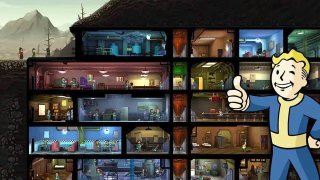
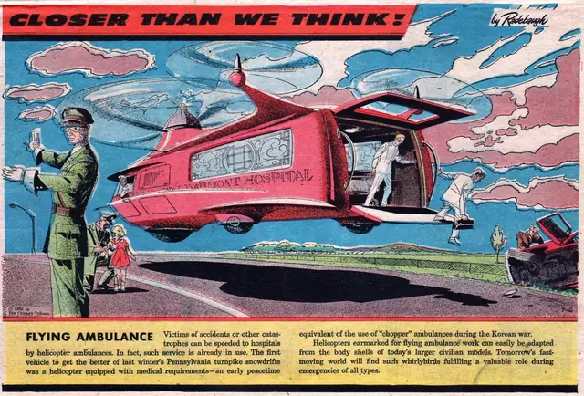
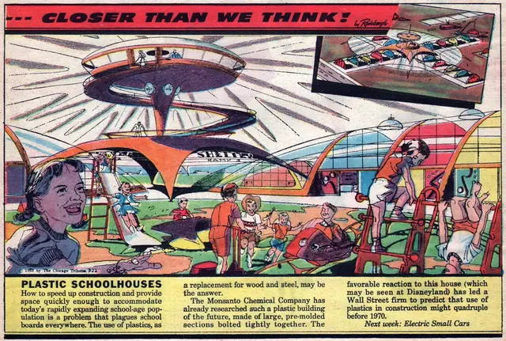
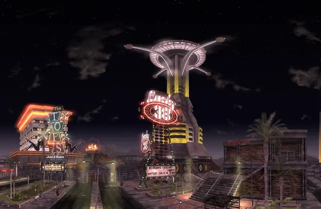
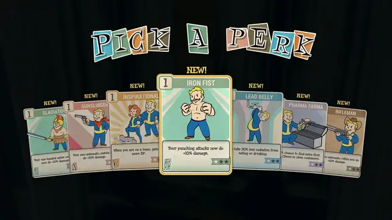
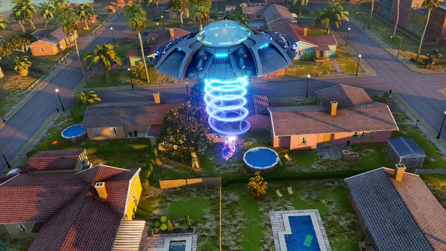
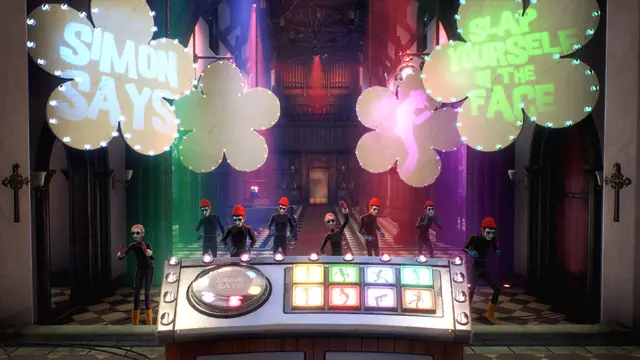
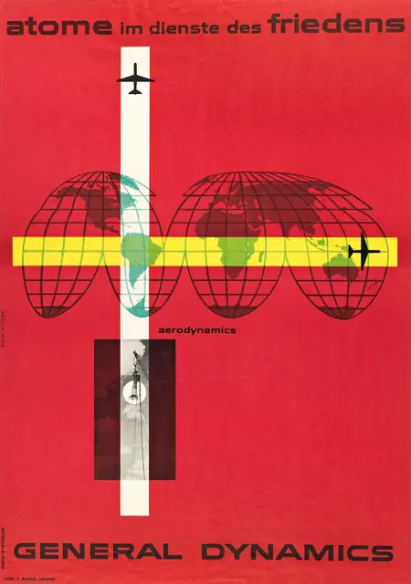
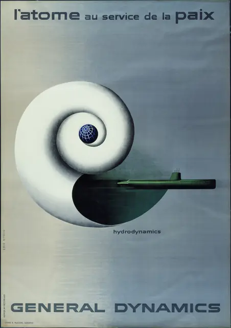
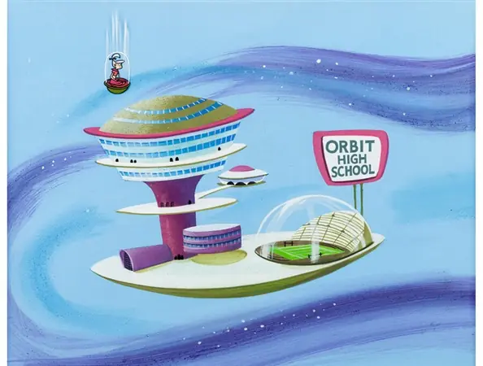
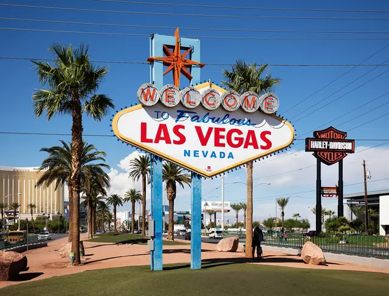
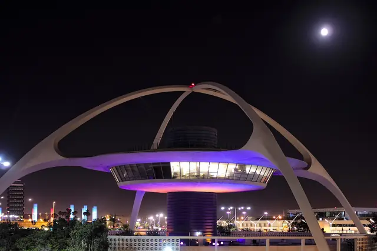
Games
- Fallout
Study the opening: cheery broadcasts on a TV, then the camera pulls back to a ruined city.5
- Fallout: New Vegas
Study the Strip for Googie signs and old lounge songs.
- Fallout 4
Its artists worked out living rooms, brands and life before the war.17 Study the pre-war opening.
- Fallout Shelter
The cartoon side of the style. Study the mascot and the cutaway rooms.
- Fallout 76
Study the illustrated perk cards and the party in the vault.
- Destroy All Humans!
Study how it plays fifties suburbs and saucer films for comedy.
- We Happy Few
Study its British 1960s take and its darker kind of good cheer.
- The Invincible
Its art director calls the look atompunk with heavy, manual machines, drawn from 1950s design and the book covers of Lem's era.26
Film, art and more
- Closer Than We Think
Radebaugh's Sunday strip of jet-pack mailmen, push-button desks and warehouse robots.8
- Atoms for Peace
Erik Nitsche's posters for General Dynamics. MoMA's copies were a gift from the company.14
- The Jetsons
Matt Novak argues that Hanna-Barbera didn't really exaggerate Southern California's Googie: they copied it.2
- Googie architecture
Coffee shops, gas stations, car washes and banks, built to catch a driver's eye.2
- Our Friend the Atom
Heinz Haber presented this Disney film on the atom after writing a book of the same title.7
- Tomorrowland
Disney's land of the future, opened in 1955.7 Study how it pitched tomorrow to families.
- Atomium
A model of an iron crystal magnified 165 billion times, 102 metres tall, built for the 1958 Brussels World Exhibition.4
- Fallout Shelter: The Board Game
Comes in a lunchbox-style tin, with tiny Vault Boy miniatures in four colours.27
Sources
- 1How A Dark Time-Traveling Fantasy Game Became the Original Fallout
- 2Googie: Architecture of the Space Age
- 3Neon and Nuclear: How Atomic Culture Influenced Vegas Design in the '50s
- 4Atomium
- 5The nuclear power of Fallout’s wartime kitsch
- 6Atomic Age Design
- 7Our Friend the Atom
- 8Before the Jetsons, Arthur Radebaugh Illustrated the Future
- 9Roundtable: Leonard Boyarsky Answers
- 101959 Cadillac Sales Catalog
- 11Monsanto House of the Future
- 12Back to the Retro Future
- 13Fallout 3 Developer Diary
- 14Erik Nitsche, L'Atome au Service de la Paix, General Dynamics (1955)
- 15How To Create a Retro Character Illustration
- 16Physically Based Materials
- 17The Making Of Fallout 4
- 18Oleo Script
- 19Atomic Age
- 20Fallout 3 "went hard on the gloomy despair of the post-apocalyptic world" to differentiate it from Oblivion, but one dev thinks Bethesda went too far: "We just drained the color out of the world"
- 21Bethesda reflects on 10 years of Fallout 4: "You have to accept the creative choices you make on every game, even in retrospect"
- 22Atompunk: fetishizing the atomic age
- 23How The Outer Worlds escaped the shadow of Fallout, according to its creators
- 24Juan Garcia Esquivel
- 25Martin Denny: 1911–2005
- 26Making The Invincible: crafting its "painterly unrealism"
- 27Fallout Shelter: The Board Game Review – A Pleasant Introduction to the Fallout Universe